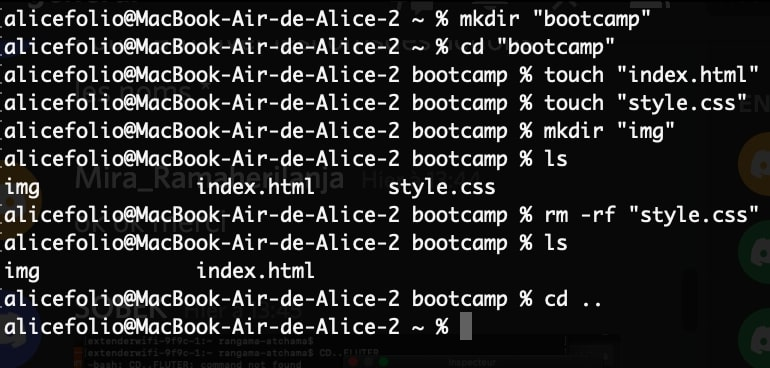

Bootcamp SP5
Créer un répertoire
- ouvrir le terminal (ou une console comme cmder)
- j'utilise la commande mkdir "..." pour créer mon répertoire
- j'utilise la commande cd "..." pour me déplacer dans le dossier crée
- dans mon dossier, je crée des fichiers avec la commande touch "..."
Remarques :
- j'utilise la commande ls pour liste les fichiers présents dans mon répertoire
- je peux supprimer un dossier ou un fichier avec la commande rm -rf "..."
- pour revenir au dossier d'origine j'utilise la commande cd ..
